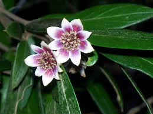

Atherospermataceae
Southern Sassafras Family
Atherospermataceae is a small family of evergreen trees and shrubs belonging to the basal angiosperm order Laurales. Distributed across temperate and tropical rainforests of the Southern Hemisphere (Australia, NZ, New Caledonia, New Guinea, southern South America), they are often aromatic and characterized by opposite, usually toothed leaves, flowers with numerous undifferentiated tepals, numerous stamens often with valvate anther dehiscence, distinct carpels enclosed in a floral cup, and fruit consisting of feathery-tailed achenes enclosed in the persistent hypanthium.
Overview
Atherospermataceae is a relatively small family comprising 6-7 genera and about 14-16 species. These evergreen trees and shrubs exhibit a classic Gondwanan distribution pattern, found in disjunct areas across the Southern Hemisphere: eastern Australia (including Tasmania), New Zealand, New Caledonia, New Guinea, and southern Chile and Argentina. They are typically components of cool, moist temperate rainforests or tropical montane forests.
Often aromatic due to essential oils, members of this family have opposite, simple leaves, usually with toothed margins. Their flowers possess numerous tepals that are not clearly differentiated into sepals and petals, numerous stamens (often with distinctive valvate anther dehiscence like laurels), and several separate carpels contained within a cup-like structure (hypanthium). The fruit is unique: an aggregate of dry, one-seeded achenes, each equipped with a long, feathery style, enclosed within the mature, often woody or fleshy hypanthium.
Several species are locally important timber trees, such as Pukatea (Laurelia novae-zelandiae) in New Zealand, Tepa (Laureliopsis philippiana) in Chile/Argentina, and Southern Sassafras (Atherosperma moschatum) and NSW Sassafras (Doryphora sassafras) in Australia. Some have traditional medicinal uses attributed to their aromatic oils or alkaloids. The family was formerly often included within the Monimiaceae but is now recognized as distinct based on molecular and morphological data.
Quick Facts
- Scientific Name: Atherospermataceae
- Common Name: Southern Sassafras family
- Number of Genera: 6-7
- Number of Species: Approximately 14-16
- Distribution: Southern Hemisphere (Aus, NZ, NC, NG, S. Chile/Argentina)
- Evolutionary Group: Angiosperms - Magnoliids - Laurales
- Current Date: March 29, 2025
Key Characteristics
Growth Form and Habit
Evergreen trees or shrubs, often aromatic due to essential oils in wood and leaves.
Leaves
Leaves are opposite (rarely whorled), simple, and petiolate. Margins are usually toothed (serrated or dentate), sometimes entire. Texture is often leathery (coriaceous). Stipules are absent.
Inflorescence
Flowers are solitary or borne in small axillary cymes or fascicles (clusters). Young inflorescences or flowers are often enclosed by conspicuous, deciduous bracts.
Flowers
Flowers are typically bisexual (sometimes unisexual), actinomorphic (radially symmetrical), often fragrant, and possess a distinct floral cup or receptacle (hypanthium).
- Perianth: Consists of typically numerous (6-20+) tepals, spirally arranged or in indistinct whorls of 3-4. Tepals are usually undifferentiated (sepal-like or petal-like), whitish, cream, or greenish. Outer tepals often bract-like.
- Androecium: Stamens usually numerous (sometimes fewer, 6-12), arranged spirally or in whorls, attached to the hypanthium rim or inner surface. Filaments are typically short and broad, sometimes bearing basal nectar glands. Anthers dehisce characteristically via valves that open upwards (like Lauraceae) or sometimes via longitudinal slits.
- Gynoecium: Carpels few to numerous, distinct (apocarpous), superior relative to their attachment point but enclosed within the fleshy or woody hypanthium. Each carpel contains a single pendulous ovule. Styles are distinct, often terminal or lateral on the carpel.
Fruits and Seeds
The fruit is an aggregate of achenes (dry, one-seeded fruits derived from individual carpels). Each achene typically possesses a persistent style that elongates and becomes feathery or hairy (plumose), aiding in wind dispersal. These achenes are enclosed within the persistent, enlarged hypanthium, which may become woody or somewhat fleshy, forming a pseudofruit (sometimes called a diclesium).
Seeds are single within each achene, containing oily endosperm and a small embryo.
Chemical Characteristics
Plants contain essential oils (responsible for aromatic properties), alkaloids (such as aporphines), lignans, and tannins. They lack stipules and possess ethereal oil cells.
Field Identification
Identifying Atherospermataceae relies on recognizing their tree/shrub habit, opposite toothed leaves, floral structure with numerous parts enclosed in a hypanthium, and the unique fruit structure within their Southern Hemisphere rainforest habitats:
Primary Identification Features
- Habit and Location: Evergreen trees or shrubs in Southern Hemisphere temperate/tropical rainforests (Aus, NZ, NC, NG, S. Chile/Arg).
- Opposite, Simple Leaves: Leaves paired, simple blade, usually with toothed margins. Often aromatic when crushed.
- No Stipules.
- Flowers with Hypanthium: Floral parts arranged on or within a distinct floral cup.
- Numerous Undifferentiated Tepals: Perianth parts numerous, not clearly sepals and petals.
- Numerous Stamens: Often with valvate anther dehiscence (opening by flaps).
- Distinct Carpels Enclosed in Hypanthium: Multiple separate carpels contained within the floral cup.
- Fruit: Aggregate of Achenes with Plumose Styles: Dry achenes, each with a feathery tail (persistent style), enclosed within the persistent hypanthium.
Secondary Identification Features
- Aromatic Quality: Crushed leaves or wood often have a distinctive scent (e.g., sassafras-like, nutmeg-like).
- Leathery Leaf Texture.
- Flowers Often Solitary or in Small Clusters.
Seasonal Identification Tips
- Year-round: Evergreen habit, opposite toothed aromatic leaves are key vegetative clues.
- Flowering Season: Variable, often spring/summer. Look for flowers with numerous parts inside a cup-like structure. Check anther dehiscence if possible (valvate vs slits).
- Fruiting Season: Following flowering. The persistent hypanthium enclosing the feathery achenes is highly diagnostic, even when old.
Common Confusion Points
Within Southern Hemisphere rainforests:
- Monimiaceae: Closely related and formerly included Atherospermataceae. Monimiaceae sensu stricto often have similar opposite leaves and flowers with hypanthia and numerous parts, but fruit details differ (often drupes or achenes not enclosed in the same way, styles usually not plumose). Distinction can be technical.
- Lauraceae: Also often aromatic trees/shrubs with simple leaves (usually alternate, rarely opposite/whorled). Flowers small, typically 6 tepals, few stamens (e.g., 9) often with valvate anthers, superior ovary (1 carpel), fruit a drupe often seated in a cupule.
- Cunoniaceae: Trees/shrubs often with opposite, usually compound (sometimes simple) leaves with interpetiolar stipules. Flowers small, 4-5 merous, petals present or absent, stamens often 8 or 10, superior ovary (usually 2 carpels), fruit typically a capsule.
- Winteraceae: Trees/shrubs with alternate simple entire leaves (no stipules), vesselless wood, ethereal oils. Flowers with variable perianth parts, numerous stamens, distinct superior carpels (apocarpous), fruit follicles or berries.
- Eucryphiaceae: Trees/shrubs (Aus/Chile) with opposite, simple or pinnate leaves, often with resinous buds. Flowers large, showy, 4 sepals, 4 large white petals, numerous stamens, superior ovary, fruit a woody capsule.
Key for Atherospermataceae: Opposite toothed leaves (usually), hypanthium, numerous undifferentiated tepals, numerous stamens (often valvate anthers), apocarpous gynoecium enclosed, and aggregate of plumose achenes within the persistent hypanthium.
Field Guide Quick Reference
Look For:
- Evergreen tree/shrub (S. Hemisphere forests)
- Often aromatic
- Opposite, simple leaves (usually toothed)
- No stipules
- Flowers with hypanthium
- Numerous undifferentiated tepals
- Numerous stamens (often valvate anthers)
- Distinct superior carpels enclosed in hypanthium
- Fruit: Aggregate of achenes with plumose styles inside persistent hypanthium
Key Variations:
- Leaf margin: Toothed vs. Entire
- Flower sexuality: Bisexual vs. Unisexual
- Stamen number (few to many)
- Anther dehiscence: Valvate vs. Slits
- Hypanthium texture in fruit (woody/fleshy)
Notable Examples
This family includes several ecologically significant trees of Southern Hemisphere rainforests:

Atherosperma moschatum
Southern Sassafras / Blackheart Sassafras
An aromatic evergreen tree native to cool temperate rainforests of southeastern Australia (Tasmania, Victoria, NSW). Known for its opposite, coarsely toothed leaves, fragrant white flowers, and nutmeg-scented bark/wood. Timber is used locally.

Laurelia novae-zelandiae
Pukatea
A large evergreen tree endemic to New Zealand, often found in lowland swamp forests, recognizable by its large plank buttresses at the base. Leaves are opposite, glossy green, serrated. Flowers are small, yellowish-green. Wood was valued by Māori for canoes.

Doryphora sassafras
NSW Sassafras / Golden Sassafras
An evergreen tree common in rainforests of eastern Australia (Queensland, NSW). Has opposite, glossy, coarsely toothed leaves that are aromatic when crushed (sassafras scent). Produces fragrant white flowers and characteristic fruits enclosing plumed achenes. Timber used locally.

Laureliopsis philippiana
Tepa / Huahuán
An evergreen tree native to the Valdivian temperate rainforests of southern Chile and adjacent Argentina. It often co-occurs with Nothofagus species. Possesses opposite, serrated, aromatic leaves and small flowers typical of the family. Important timber species in its region.
Phylogeny and Classification
Atherospermataceae belongs to the order Laurales, which is part of the Magnoliids clade, representing an early-diverging lineage of angiosperms distinct from monocots and eudicots. Laurales typically includes aromatic trees and shrubs with relatively simple flowers often possessing numerous parts.
Historically, the genera now placed in Atherospermataceae were often included within a broader Monimiaceae. However, molecular phylogenetic studies have shown that Monimiaceae sensu lato was polyphyletic. Atherospermataceae is now recognized as a distinct monophyletic family within Laurales. Its closest relatives within the order are Siparunaceae (tropical American shrubs/trees) and Gomortegaceae (monotypic family from Chile). This clade (Atherospermataceae + Siparunaceae + Gomortegaceae) is then sister to the core Monimiaceae sensu stricto. Lauraceae (Laurel family) and Calycanthaceae (Spicebush family) represent other major lineages within Laurales.
Position in Plant Phylogeny
- Kingdom: Plantae
- Clade: Angiosperms (Flowering plants)
- Clade: Magnoliids
- Order: Laurales
- Family: Atherospermataceae
Evolutionary Significance
Atherospermataceae offers insights into early angiosperm evolution and biogeography:
- Basal Angiosperm Lineage: As part of Laurales/Magnoliids, it helps understand floral evolution near the base of the angiosperm tree, showcasing features like numerous tepals, apocarpy within a hypanthium, and specialized anther dehiscence.
- Gondwanan Distribution: Its classic disjunct Southern Hemisphere distribution is strong evidence for origins on the ancient supercontinent Gondwana, followed by vicariance as continents separated, and potentially some later dispersal.
- Relationship with Monimiaceae: The separation from Monimiaceae highlights how molecular data refines understanding based purely on morphology, revealing distinct evolutionary lineages within formerly combined groups.
- Floral Structure: The development of a hypanthium enclosing distinct carpels, and the fruit type involving plumed achenes within this structure, represent unique reproductive adaptations within Laurales.
- Valvate Anther Dehiscence: Shares this feature with Lauraceae, suggesting either a shared ancestral trait or convergent evolution within the Laurales.